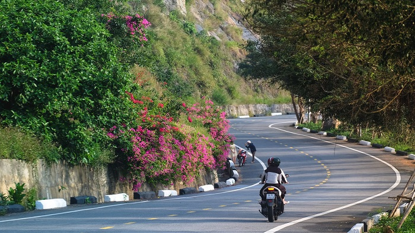

DU LỊCH ĐÀ NẴNG CẨM NANG A-Z
Du lịch Đà Nẵng - thành phố đáng sống nhất Việt Nam có nhiều địa điểm đẹp và món ăn ngon để khám phá. Tham khảo ngay bài viết này để có kinh nghiệm và lịch trình du lịch Đà Nẵng hợp lý nhé.
1. Giới thiệu về Đà Nẵng
Nhắc đến Đà Nẵng nhiều người sẽ thường nghĩ ngay đến “thành phố đáng sống nhất Việt Nam” nhờ cảnh sắc, khí hậu ôn hòa, rất thích hợp để nghỉ dưỡng. Chính bởi vậy, du lịch Đà Nẵng luôn là sự lựa chọn hàng đầu của rất nhiều du khách đến để khám phá vùng đất này.
Đà Nẵng có vị trí cách TP.HCM khoảng 961 km về phía Nam và tiếp giáp với cố đô Huế. Không chỉ là địa điểm du lịch nổi tiếng, Đà Nẵng còn là trục giao thông Bắc – Nam, là cửa ngõ quan trọng lưu thông tới các tỉnh Bắc - Nam và miền Trung.
2. Thời điểm du lịch thích hợp nhất
Đà Nẵng có vị trí nằm tại miền Trung, mang những nét đặc trưng của kiểu khí hậu nhiệt đới với 2 mùa rõ rệt là mùa khô và mùa mưa. Mùa khô kéo dài từ tháng 1 đến tháng 7 hàng năm, sau đó Đà Nẵng bắt đầu bước vào mùa mưa và thường xuyên có bão. Vậy thì du lịch Đà Nẵng mùa nào đẹp?
Mỗi mùa tại Đà Nẵng đều mang nét đẹp riêng để bạn khám phá. Du lịch Đà Nẵng mùa khô từ tháng 1 đến tháng 7, thời tiết không chỉ đẹp, thích hợp để ngắm cảnh, mà đây cũng là thời gian Đà Nẵng có rất nhiều lễ hội hấp dẫn như lễ hội bắn pháo hoa...
Nếu bạn muốn thử cảm giác mới lạ du lịch Đà Nẵng mùa mưa thì cũng không có gì quá đáng ngại cả. Vẻ đẹp trầm mặc hơn và những cơn mưa rả rích sẽ là một trải nghiệm thú vị. Đặc biệt nằm ngoài mùa cao điểm nên nhiều dịch vụ vui chơi, tham quan, khách sạn cũng rẻ hơn, tiết kiệm tương đối cho túi tiền. Tuy nhiên, bạn cần nghiên cứu kỹ thời tiết, chuẩn bị đồ kỹ càng và bỏ túi những lưu ý: Du lịch Đà Nẵng mùa mưa nên đi lại, ăn uống, vui chơi như thế nào?
3. Chuẩn bị gì khi đi du lịch Đà Nẵng
Để chuẩn bị đồ nhanh chóng và không bỏ quên bất kỳ vật dụng quan trọng nào, bạn có thể tham khảo 5 nhóm vật dụng chính sau đây:
- Giấy tờ: Các loại giấy tờ tùy thân như CMND, CCCD, vé máy bay, vé tàu xe...
- Tiền: Sử dụng thẻ ATM sẽ giúp đảm bảo an toàn khi đi du lịch, tuy nhiên bạn cũng nên đem theo một chút tiền mặt để chi trả cho các dịch vụ, hoạt động mua sắm, ăn uống... khi cần thiết.
- Quần áo: Phần đông du khách đến Đà Nẵng du lịch đều vào mùa hè khi có thời tiết nắng nóng nhất nên nếu có ý định đi vào mùa này, bạn nên mang theo quần áo rộng, thoáng mát,... đặc biệt là những chiếc váy maxi, bikini để tha hồ thả dáng trên biển. Bên cạnh đó, bạn nên mang kèm theo một số phụ kiện chống nắng như mũ, kính, ô... đề phòng thay đổi thời tiết.
- Phụ kiện điện tử: Chuyến đi của bạn chắc chắn không thể thiếu điện thoại di động, sạc, tai nghe hay máy ảnh... để ghi lại những khoảnh khắc đáng nhớ rồi.
- Mỹ phẩm: Bạn có thể sử dụng các bình chiết nhỏ để đem theo sữa rửa mặt, tẩy trang, kem chống nắng, kem dưỡng, dầu gội... để tiết kiệm diện tích và cân nặng cho hành lý.
- Đồ dùng y tế: Để an tâm và chủ động trong chuyến đi, bạn có thể chuẩn bị sẵn một số loại thuốc thông dụng như cảm cúm, ho, thuốc do đường tiêu hóa và thuốc chống say tàu xe.
Ngoài ra, một điều rất quan trọng trước chuyến đi là hãy tham khảo các lịch trình du lịch và tour hoặc combo du lịch Đà Nẵng chất lượng, giá tốt. Như vậy chuyến đi của bạn sẽ thật trọn vẹn và tiết kiệm.
4. Phương tiện du lịch Đà Nẵng
Vì là vùng đất miền Trung nên du lịch Đà Nẵng có rất nhiều phương tiện để bạn lựa chọn. Tùy theo vị trí bạn ở đâu có thể lựa chọn hình thức di chuyển khác nhau như:
- Máy bay: Hình thức phổ biến nhất được nhiều du khách lựa chọn khi đi du lịch Đà Nẵng là máy bay bởi sự tiện lợi, nhanh và tiết kiệm thời gian. Tuy nhiên nếu bạn lựa chọn hình thức này thì nên đặt vé trước ít nhất 1-2 tháng để săn được vé rẻ, giúp tiết kiệm cho chuyến đi.
- Xe khách: Hiện nay có rất nhiều hãng xe khách từ ghế ngồi đến giường nằm chạy tuyến Bắc- Nam để phục vụ nhu cầu đi lại của du khách. Nếu bạn muốn có một chuyến đi tiết kiệm thì có thể lựa chọn xe khách với giá dao động từ 250.000 – 500.000 đồng.
- Tàu hỏa: Đây là cách được khá nhiều bạn trẻ lựa chọn bởi di chuyển bằng tàu hỏa vừa nhanh hơn xe khách lại có thể ngắm được cảnh suốt chuyến đi. Đặc biệt, nếu lịch trình của bạn có ghé qua Huế thì tàu hỏa là sự lựa chọn khá hợp lý bởi bạn hoàn toàn có thể xuống ở ga Huế rồi mới di chuyển tiếp đến Đà Nẵng.
5 Di chuyển ở Đà Nẵng bằng phương tiện gì?
Sau khi đã đến được Đà Nẵng, việc di chuyển trong thành phố khá dễ dàng bởi hầu hết các địa điểm du lịch đều có vị trí gần nhau. Bạn có thể tham khảo một số cách di chuyển như:
- Taxi: Đây là cách di chuyển thường được du khách lựa chọn nhiều bởi tiện lợi, nhanh chóng và không mất nhiều thời gian. Tuy nhiên cước phí taxi tại Đà Nẵng khá đắt nên nếu bạn đi với gia đình hoặc nhóm đông thì có thể chọn hình thức di chuyển này nhé.
- Xe máy: Với các bạn trẻ thì du lịch Đà Nẵng bằng xe máy là phương tiện phổ biến bởi vừa tiết kiệm chi phí lại có thể chủ động được thời gian, địa điểm đến. Nếu bạn tự tin vào khả năng tìm đường của mình thì vừa vi vu trên chiếc xe máy vừa khám phá thành phố cũng là lựa chọn thú vị.
- 
- Xích lô: Hiện nay không còn nhiều người chọn xích lô làm phương tiện di chuyển nhưng nếu bạn muốn một chút hoài cổ và muốn thong dong ngắm cảnh thành phố thì có thể lên xích lô đi một vòng nhé.
- Thuê ô tô: Với những gia đình đông người muốn có phương tiện riêng để chủ động đi lại thì có thể thuê 1 chiếc ô tô để thoải mái khám phá thành phố. Tuy nhiên giá thuê xe khá cao mà cần phải thông thạo đường đi nên nếu bạn du lịch đến Đà Nẵng theo nhóm đông thì có thể cân nhắc nhé.
- Xe buýt: Đà Nẵng có rất nhiều tuyến xe bus đi đến nhiều địa điểm du lịch và thời gian hoạt động cả ngày nên bạn có thể chọn xe bus làm phương tiện di chuyển. Đây là cách di chuyển khá dễ dàng và tiết kiệm chi phí, tuy nhiên lại không lợi về thời gian vì phải mất thời gian chờ 15-20 phút mới có một chuyến xe.
Trên đây là toàn bộ kinh nghiệm và lịch trình du lịch Đà Nẵng tham khảo dành cho những ai đang chuẩn bị đến vùng biển xinh đẹp này. Nếu bạn đang có ý định đến Đà Nẵng thì có thể tham khảo